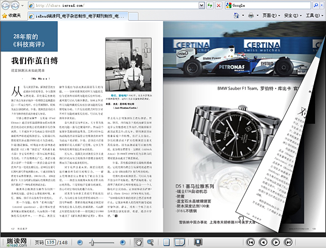

免费注册帐号
请通过浏览器进入瑞读网在线电子杂志制作网站 http://www.ieread.com/app/（图 1）。
进入制作系统 （第一步）
点击‘开始’菜单 （第二步）
注册帐号 （第三步）
注：每个注册帐号将获得200M的文件存储空间。
上传电子文件
点击制作系统中“上传文件”图标（图 1）。

图 1 点击‘选择本地文件’-第三步

图 2 点击‘开始上传’-第二步

图 2 点击‘开始上传’-第二步
注：上传的Word、PowerPoint、pdf文件将会自动的转换成电子杂志。
在线阅读电子杂志
电子杂志转换完毕后，就可以开始在线阅读电子杂志。

图 1 点击‘选择本地文件’-第三步
注：上传的Word、PowerPoint、pdf文件将会自动的转换成电子杂志。
发布电子杂志
点击制作系统中“我的文件夹”图标，将会显示你所有的电子杂志文件。
双击需要发布的电子杂志文件
点击‘进行发布’按钮
电子杂志将会在网站中发布出来
注：为了确保内容的合法性，电子杂志必须通过管理员的审核后才能发布。